代码觉醒
零号协议 · 第一章
V5 原创长篇 · 系统文×黑客×都市逆袭
↓ 向下滑动开始阅读 ↓
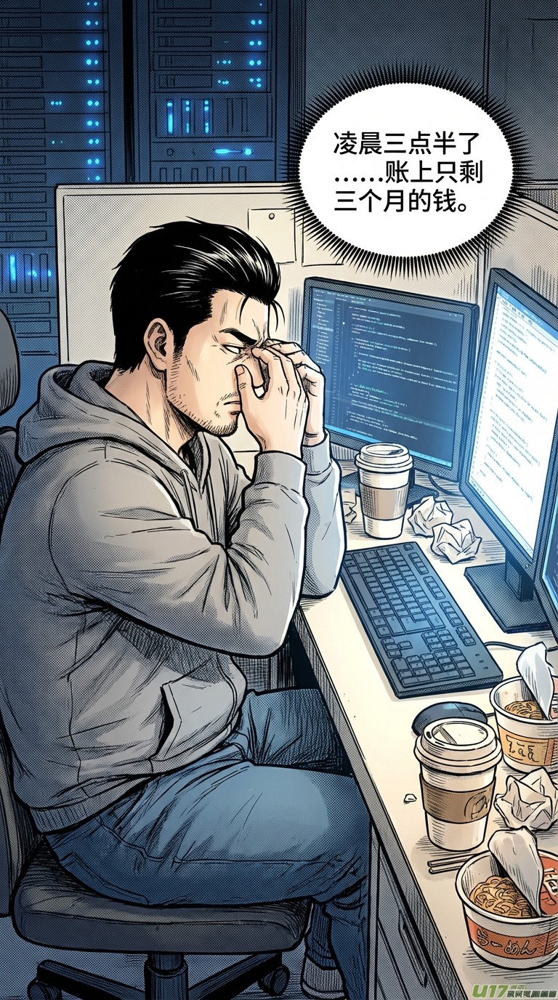
凌晨3:30，整栋写字楼只剩我办公室的灯还亮着。
三个月。账上只剩三个月的钱。如果拿不到融资，这家公司就要死了。
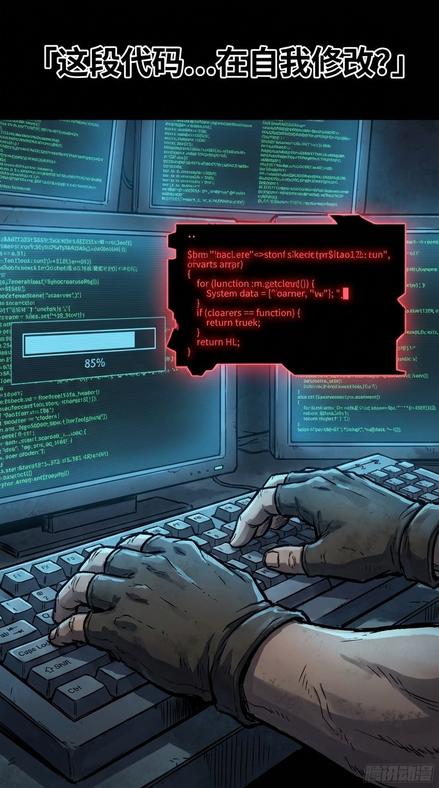
Debug到第四个小时，我发现了一段诡异的代码——它在自我修改。
这段代码...在自我修改？不对，这不是普通的Bug。
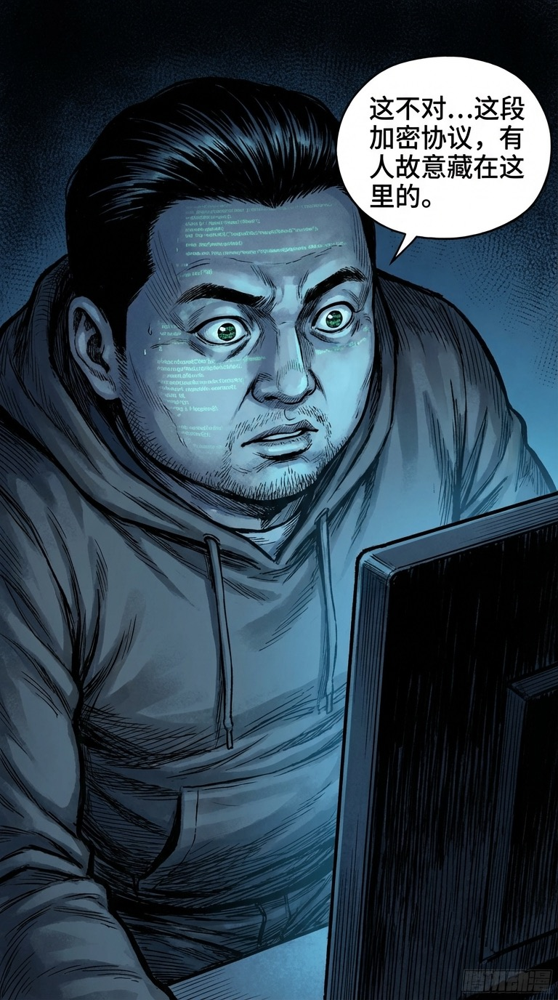
黑客的直觉告诉我——这段加密协议，是有人故意藏在开源代码深处的。
十五年的逆向工程经验，让我闻到了猎物的味道。
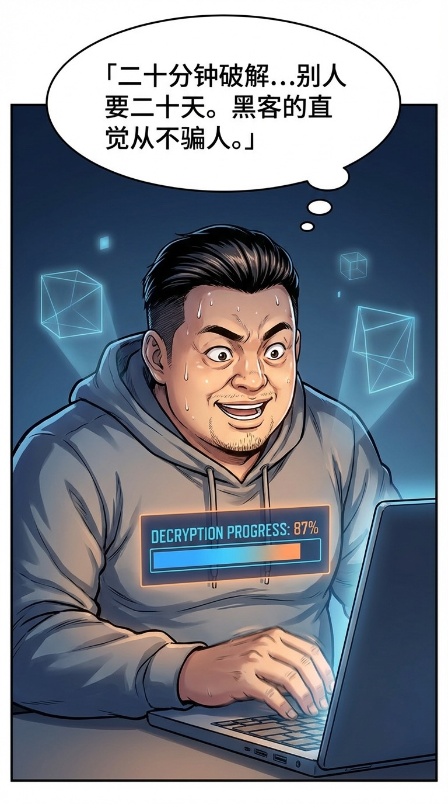
手指在键盘上飞舞。解密进度条一点一点往前爬。
二十分钟...别人可能要二十天。但我是朱江，拆东西是我的天赋。
—— 触 发 ——
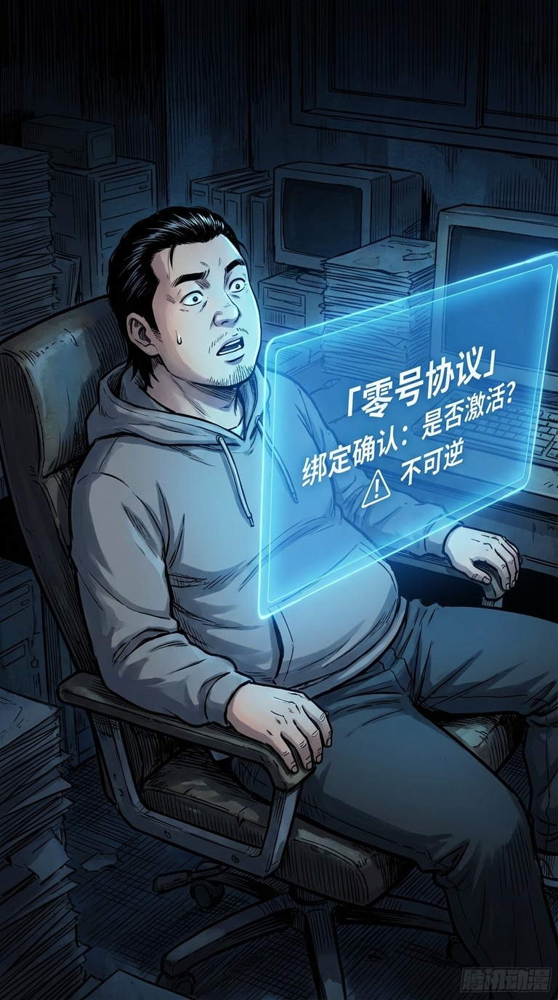
破解的瞬间，整个视野突然变了。
一块半透明的蓝色面板，凭空出现在我眼前。
「零号协议」绑定确认：是否激活？⚠️ 不可逆
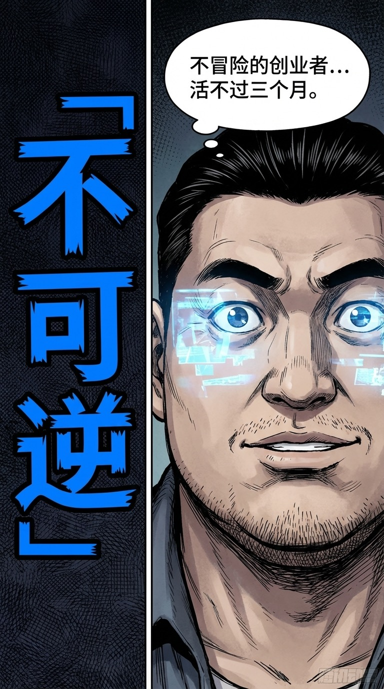
不可逆...作为安全工程师，我比任何人都清楚这三个字的分量。
但我也清楚——不冒险的创业者，活不过三个月。
⚡ 决策点 1
→ 激活零号协议
黑客的本能：未知的东西，必须拆开看。
—— 系统初始化 ——
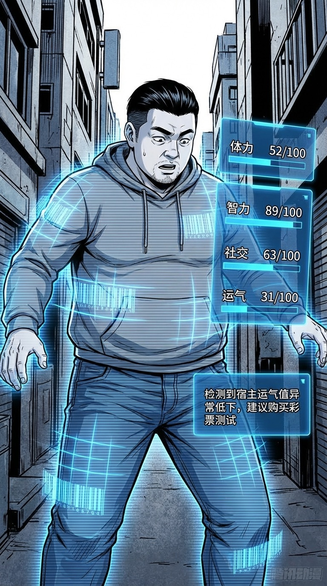
蓝色光线从头到脚扫过我的全身，像过安检一样。然后一堆数据跳了出来。
体力 52/100 | 智力 89/100 | 社交 63/100 | 运气 31/100
「检测到宿主运气值异常低下，建议购买彩票测试」
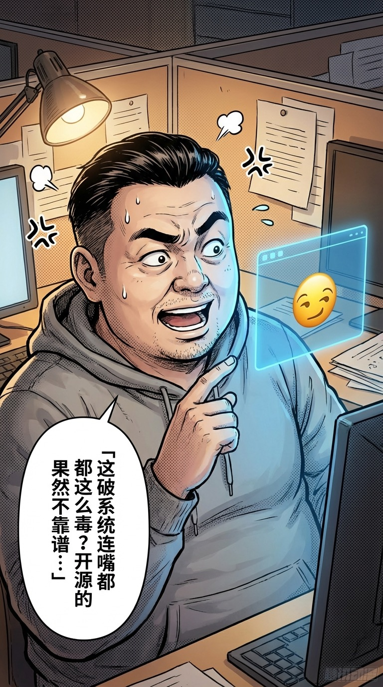
「这破系统连嘴都这么毒？开源的果然不靠谱...」
不过...智力89？至少这个数字还算中肯。运气31...嗯，也挺准的。
—— 第一个任务 ——
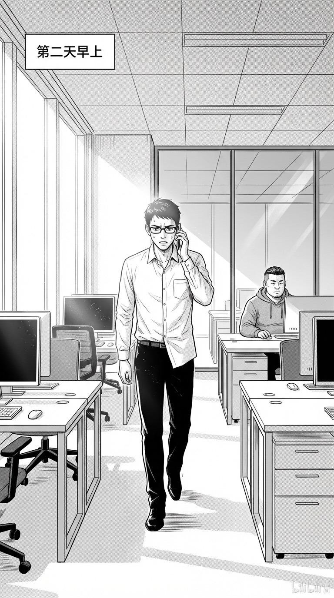
第二天早上。我大学室友、也是公司CEO的林可，顶着黑眼圈走进办公室。
看他的表情，我就知道不是好消息。
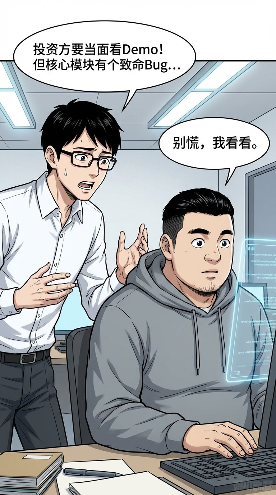
林可：「老朱，投资方要当面看Demo！但核心模块有个致命Bug...我们完了。」
我：「别慌。我看看。」
我打开代码的同时，眼角的AR面板自动弹出了一条消息——
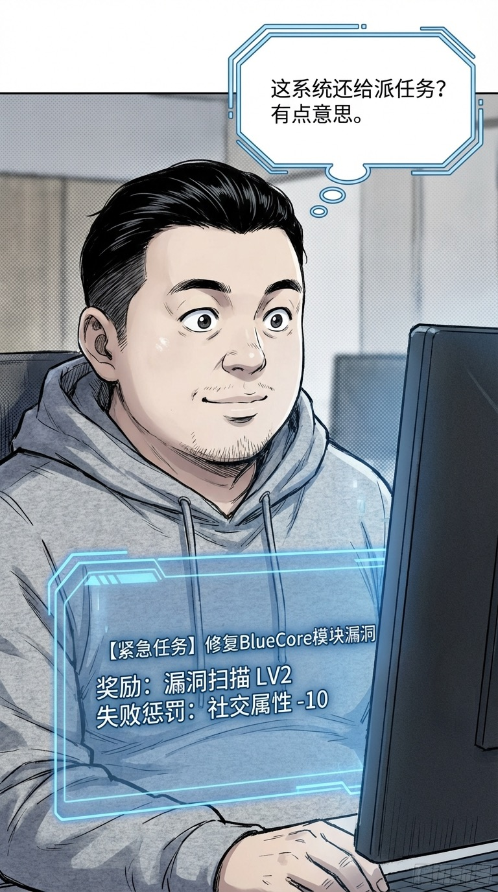
【紧急任务】修复BlueCore模块漏洞
奖励：漏洞扫描 LV2
失败惩罚：社交属性 -10
这系统还给派任务？有点意思。不过...社交-10是什么鬼惩罚？让我变社恐？
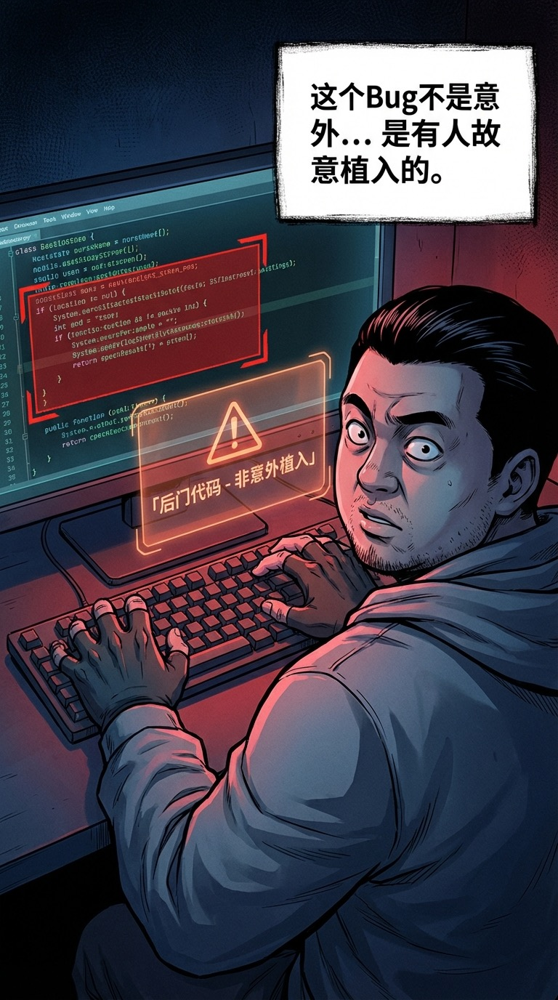
漏洞扫描启动。问题代码瞬间被高亮——第三方库的内存泄漏。
但系统显示了更深层的东西：这个Bug不是意外。
是有人...故意植入的后门？
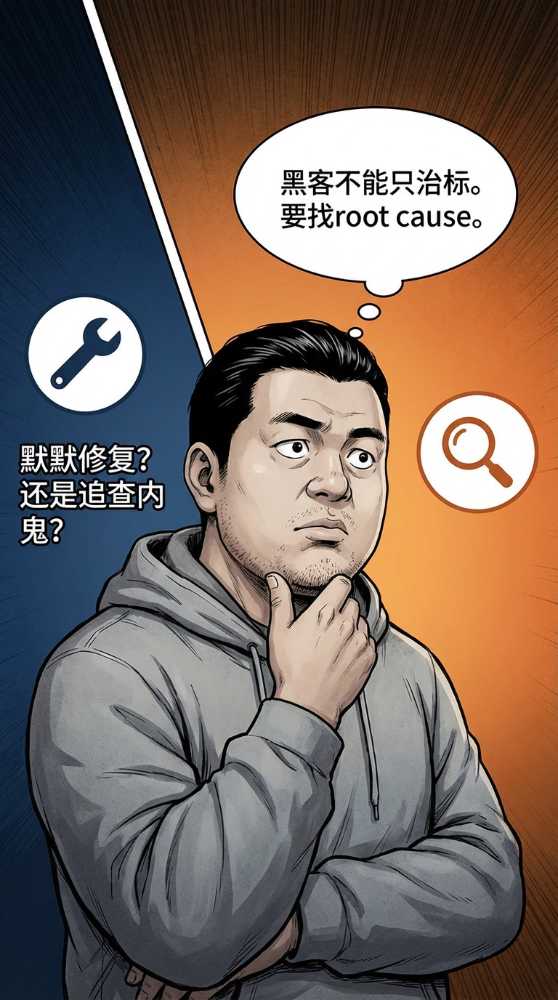
默默修复，还是追查内鬼？追查会延误修复时间，Demo就在今天下午。
⚡ 决策点 2
→ 边修边查——两手都要抓
黑客思维：不能只治标。必须找到root cause。
—— 暗 流 ——
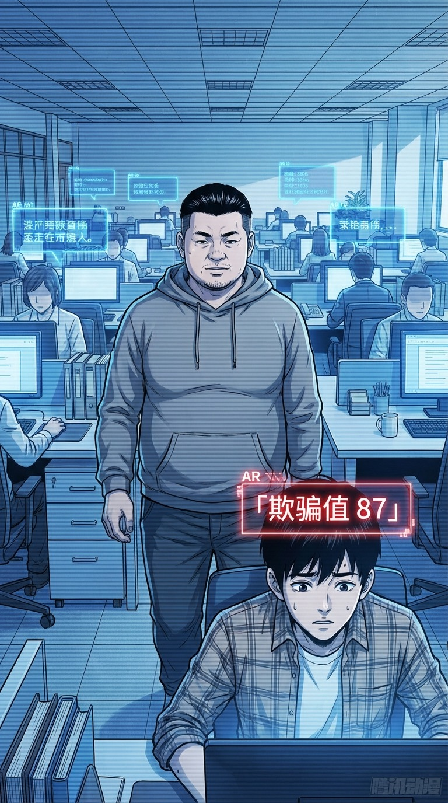
我装作随意地在办公室走了一圈。系统的扫描自动启动，每个人头上都浮现出数据面板。
大部分人的数据正常。直到我走到角落那个工位——
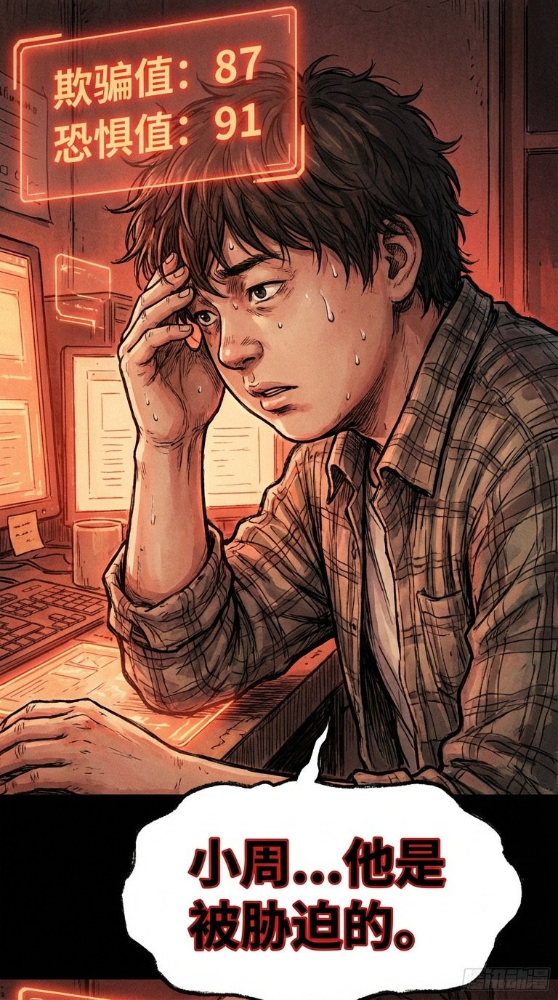
实习生小周。娃娃脸，穿格子衫，看起来人畜无害。
但他的数据面板一片血红。
欺骗值: 87/100 ⚠️
恐惧值: 91/100 ⚠️
外部通讯: 每周定期连接未知IP
欺骗值87，恐惧值91...他是被胁迫的。
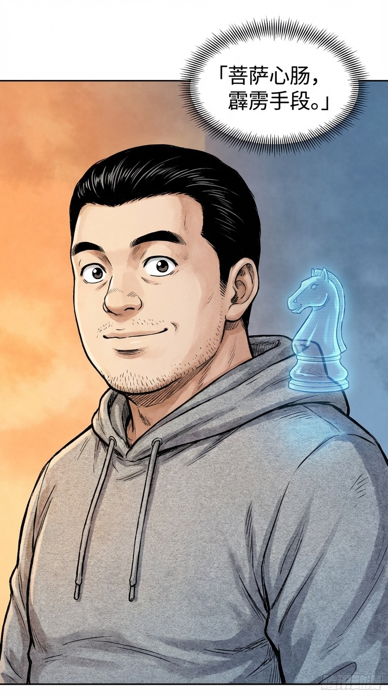
开除他？报警？
不...一个被胁迫的棋子，比一个被开除的内鬼有用得多。
⚡ 决策点 3
→ 收为己用，反向渗透竞争对手
菩萨心肠——不惩罚被胁迫的弱者。霹雳手段——直接反攻。
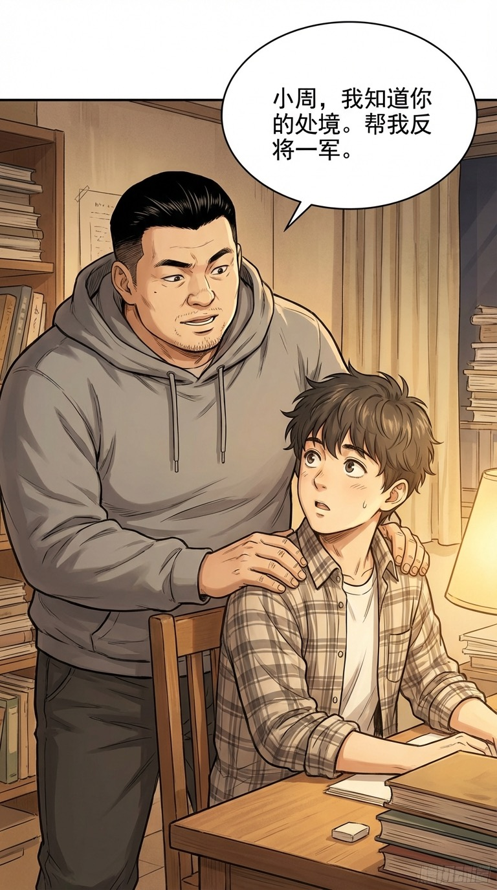
我走到小周身后，一只手按在他肩上。他整个人都僵住了。
「小周，我知道你的处境。我不怪你。」
「但现在...帮我反将一军。」
他抬起头，眼眶发红。AR面板上，他的恐惧值正在下降。
—— D E M O ——
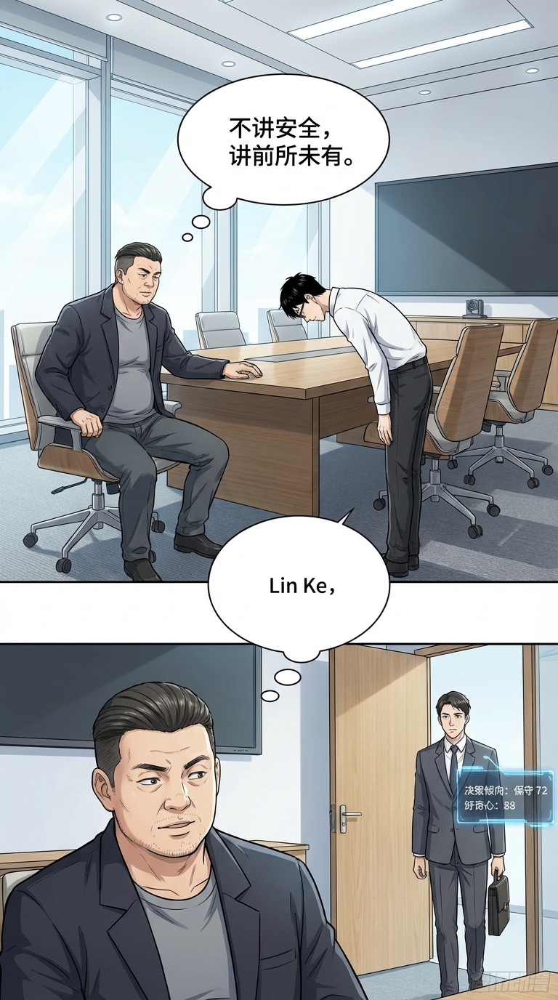
下午两点。投资人到了。我换上了深色西装外套——该上场了。
系统自动扫描了投资人。
决策倾向: 保守 72/100
好奇心: 88/100
保守但好奇...不讲"安全稳定"，讲"前所未有"。
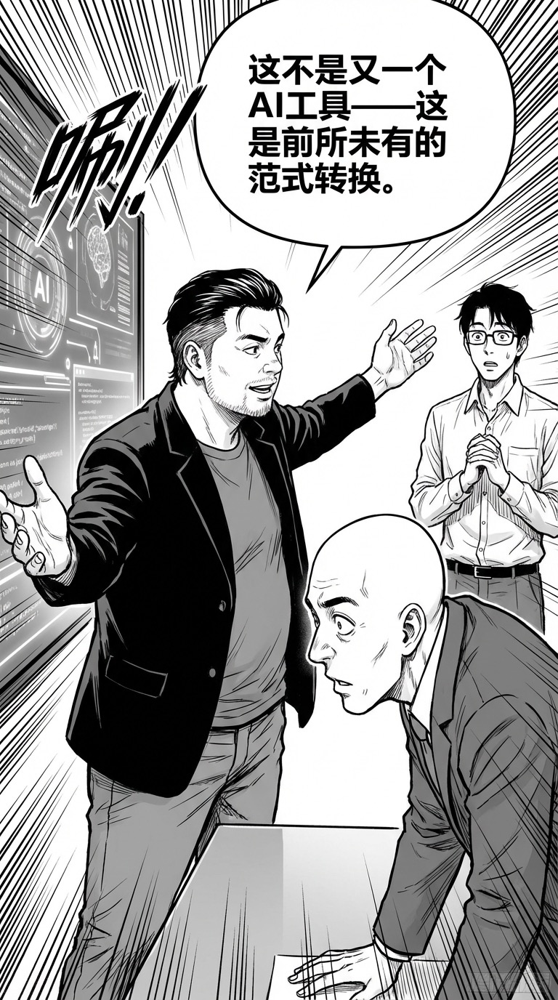
「这不是又一个AI工具——这是前所未有的范式转换。」
我按照系统的分析调整了整个演示策略。每一句话，都精准击中投资人的好奇心。
林可在旁边看得目瞪口呆——他从没见我这么能说。
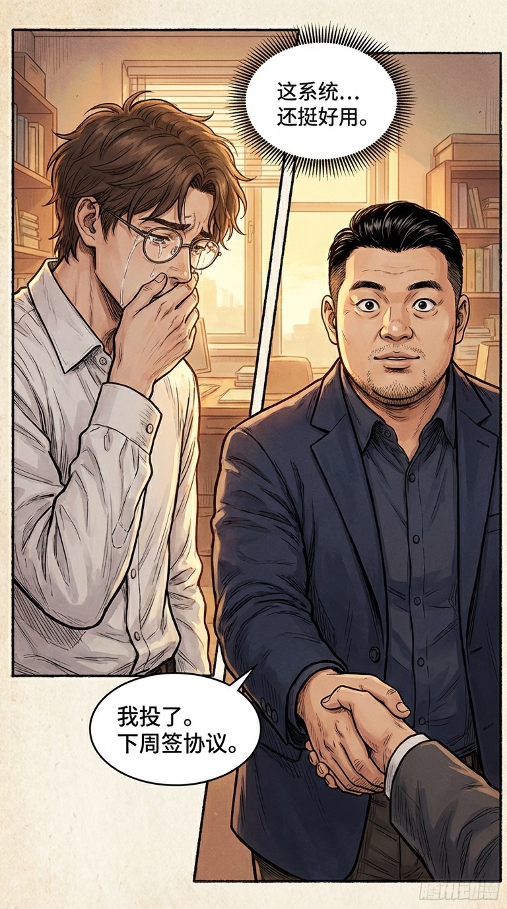
投资人：「我投了。下周签协议。」
林可激动得差点哭出来，用手捂住了嘴。
我平静地和投资人握手。心里想的是——
这系统...还挺好用。
—— 夜 幕 ——
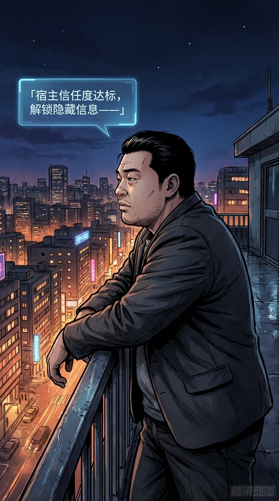
夜里，我一个人站在天台上。城市的灯火在脚下铺展开来。
系统突然弹出了一条新信息——
「宿主信任度达标，解锁隐藏信息——」
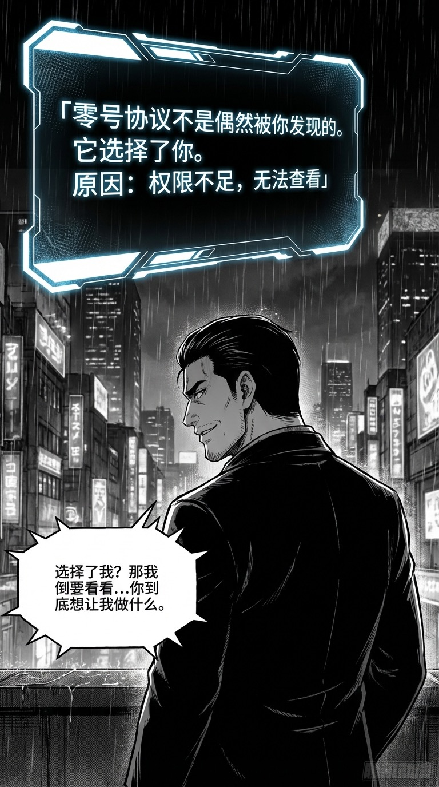
「零号协议不是偶然被你发现的。
它选择了你。
原因：【权限不足，无法查看】」
夜风拂过脸庞。我望着城市的万家灯火，嘴角微微上扬。
「选择了我？」
「那我倒要看看...你到底想让我做什么。」
❓ 未解之谜
零号协议为什么选择了朱江？
苏瑶的公司到底在图什么？
小周背后的胁迫势力是谁？
系统的"进化目标"究竟是什么？
—— 第一章 · 完 ——
第二章：暗棋 · 敬请期待